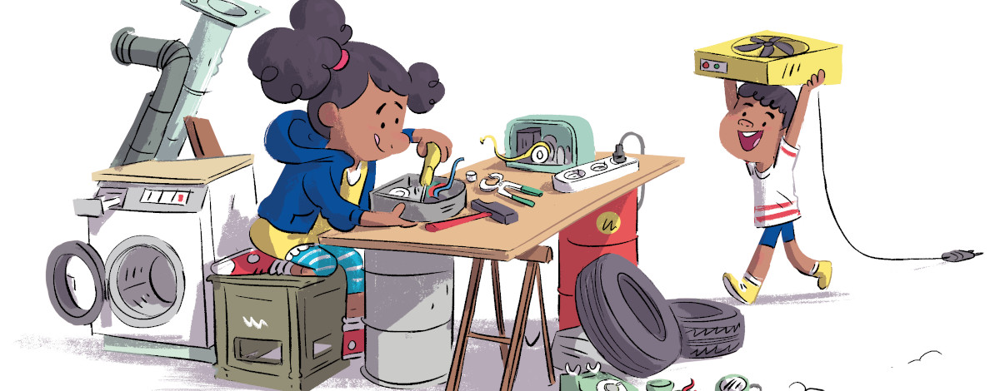
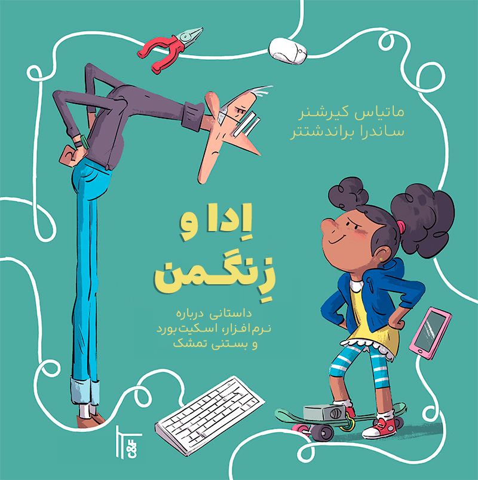

ارائه
اِدا و زِنگمَن کتاب مصوری است برای بچهها. موضوعش ساختن و تعمیر کردن است، نرمافزار آزاد، دوستی، و اینکه دخترها هم میتوانند ابزار بسازند و مال خودشان باشد.
داستان
زنگمن مخترعی مشهور در سطح جهان و فوقالعاده ثروتمند است. کودکان و بزرگسالان عاشق اختراعهایشاند. اما ناگهان مشکلی بزرگ پیش میآید: اسکیتبوردهای الکترونیکی بچهها درست کار نمیکنند و همه بستنیها یک طعم پیدا کردهاند.
چه اتفاقی در حال رخ دادن است؟
ادا، دختری جوان و کنجکاو، کشف میکند که زنگمن چگونه از راه رایانه طلاییاش همه محصولاتش را کنترل میکند. او با دوستانش روی ابزارها و دستگاههایی کار میکند که دیگر زیر فرمان زنگمن نیستند.
داستان ساده است: ساختن، تعمیر کردن، رفاقت، و اینکه آدم ابزارهایش را خودش بفهمد.
کتاب و انتشار آزاد

اول بهصورت کتاب درآمد. قصهاش با دختری کنجکاو شروع میشود که نمیخواهد ابزارهایش دست کس دیگری باشد.
خود کتاب هم سرگذشت جالبی دارد. نویسندگان نسخه اصلی آلمانی آن را با مجوز آزاد منتشر کردهاند؛ بهجای «همه حقوق محفوظ»، استفاده، تغییر و بازنشر اثر آزاد است. همین انتخاب ترجمه و انتشار گستردهتر را ممکن کرد — از جمله پروژهای آموزشی برای ترجمه فرانسوی.
رایان (آلس)، متئو (بزانسون)، رزن (گنگم)، لونا (پاریس)… بیش از صد دانشآموز ۱۳ تا ۱۹ ساله از چهار مؤسسه آموزشی در سال تحصیلی ۲۰۲۲–۲۰۲۳ کتاب را از آلمانی به فرانسوی ترجمه کردند. کار را میان خود تقسیم کردند و با ابزارهای دیجیتال هماهنگ شدند. آفرین بر آنان — و سپاس از معلمانشان و انجمن توسعه آموزش زبان آلمانی در فرانسه (ADEAF).
در وزارتخانه، در چارچوب مأموریتهای آموزش دیجیتال و آموزش از راه دیجیتال، از توسعه منابع آموزشی مشترک و آزاد پشتیبانی میشود. موضوع این کتاب و مترجمان جوانش، نمونهای روشن از همین هدف است.
وزارت آموزش ملی و جوانان فرانسه
بنیانگذار فراماسافت (Framasoft)
پدیدآورندگان
این کتاب را ماتیاس کیرشنر (متن) و ساندرا براندشتتر (تصویرگری) نوشته و مصور کردهاند.
موضوعها
چند موضوع توی داستان هست:
- جای دخترها در علم و فناوری
- اینکه همه بتوانند وارد کار شوند
- درآوردن کار از دست یک نفر و گذاشتن دست جمع
- دانش و ابزار مشترک
- دموکراسی
- اینکه ابزار مال خودت باشد، نه مال شرکت
- وسایلی که عمدا زود خراب میشوند